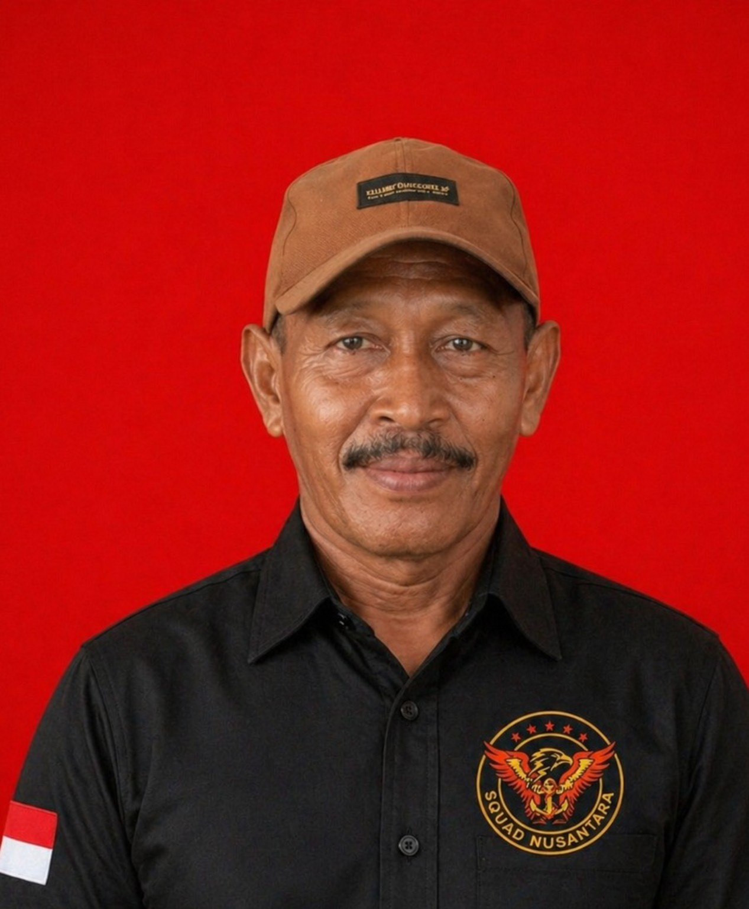
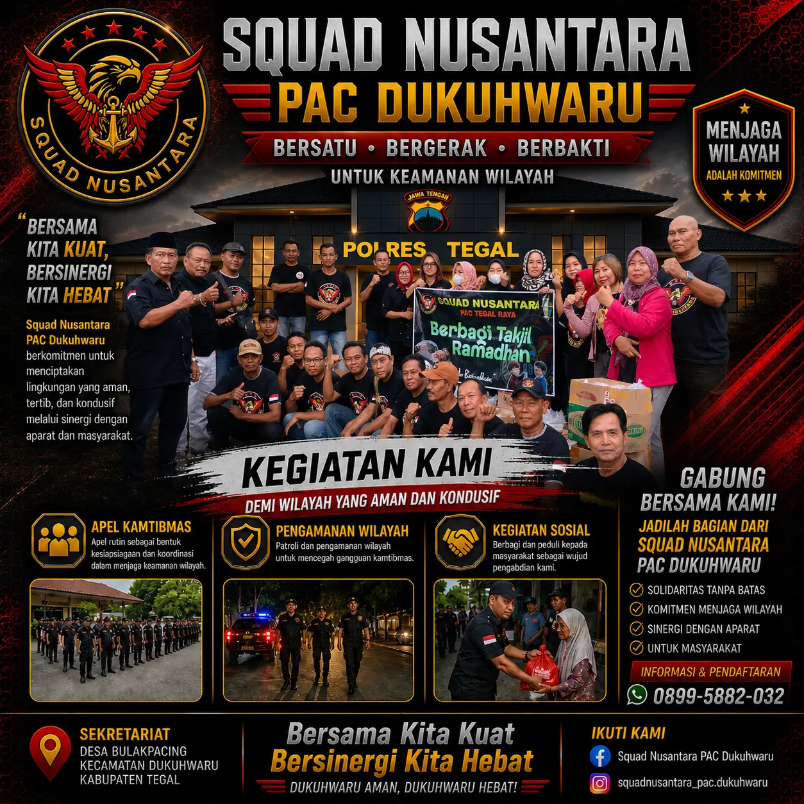
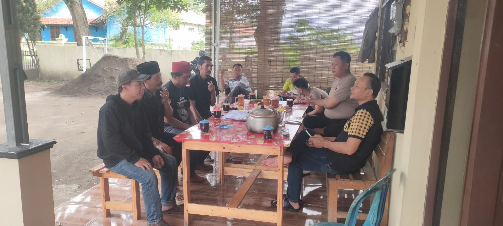
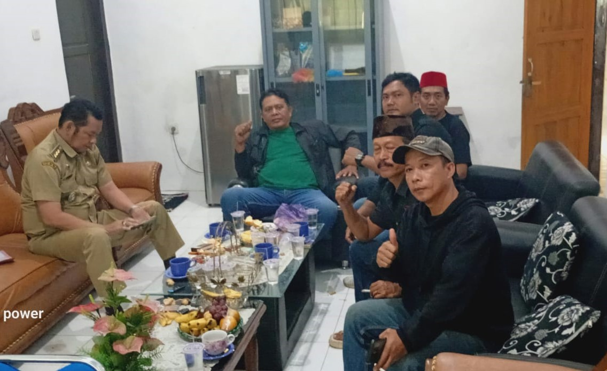
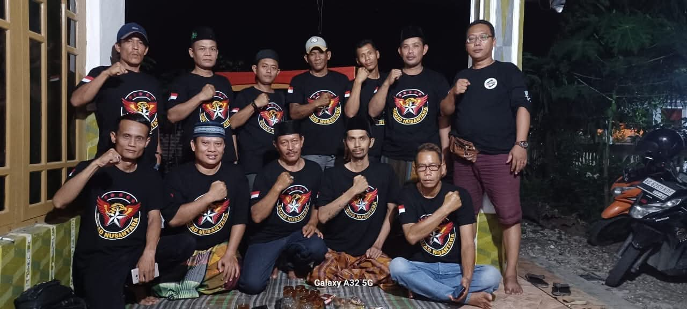
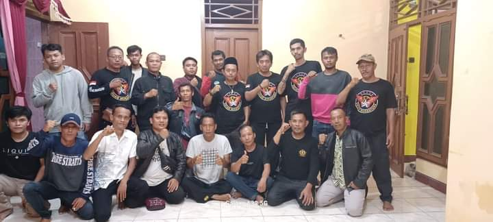
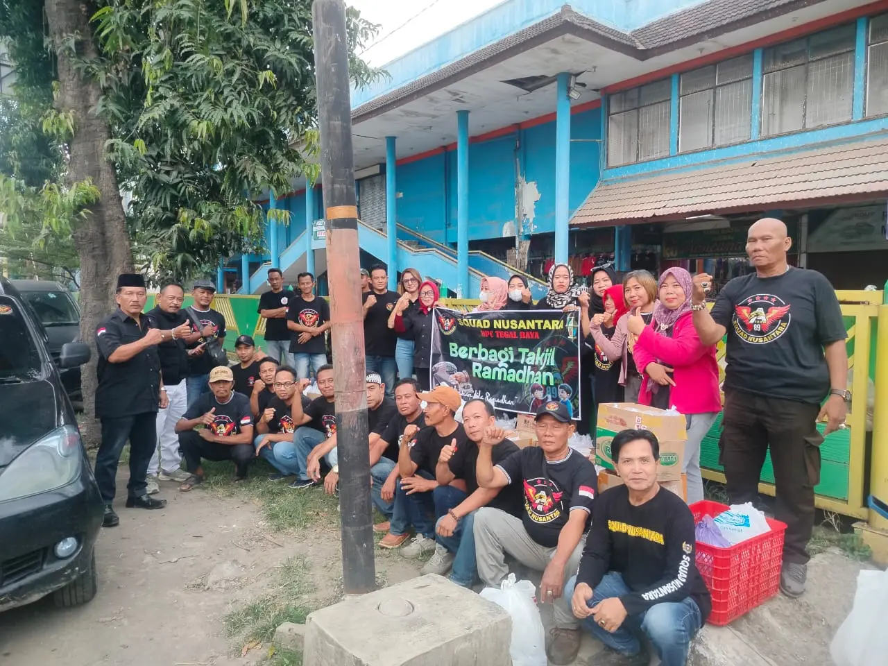
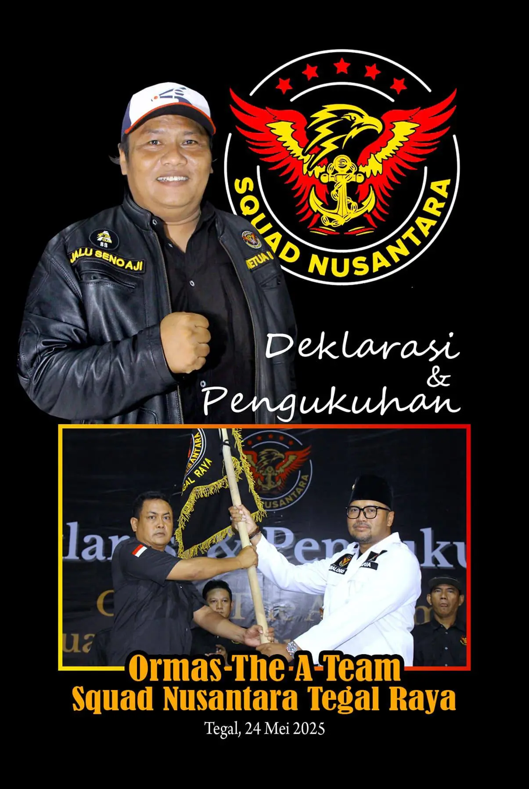

Komando & Kepemimpinan
Struktur Organisasi

Wasis
Ketua PAC
Aceng
Pembina
Januri
Sekretaris

Nama Bendahara
Bendahara
Bersatu • Bergerak • Berbakti
Gabung SekarangSquad Nusantara PAC Dukuhwaru adalah organisasi masyarakat profesional yang berkomitmen penuh menjaga keamanan, ketertiban, dan menjunjung tinggi solidaritas di wilayah Kecamatan Dukuhwaru, Kabupaten Tegal. Kami hadir sebagai mitra strategis aparat dan pengayom masyarakat.
Bekerjasama erat dengan TNI/Polri dalam menjaga kondusifitas dan keamanan wilayah secara aktif.
Terlatih dan siaga dalam memberikan pengamanan serta respon cepat terhadap isu ketertiban masyarakat.
Membangun jiwa korsa, persaudaraan yang kuat, dan kepedulian sosial yang tinggi antar anggota & warga.

100%
Berdedikasi

Dalam rangka mempererat hubungan kelembagaan dan meningkatkan keamanan wilayah, Squad Nusantara PAC Dukuhwaru melaksanakan kunjungan audiensi ke Polsek Dukuhwaru.

Dalam upaya mempererat hubungan kelembagaan dan meningkatkan koordinasi wilayah, Squad Nusantara PAC Dukuhwaru melaksanakan kunjungan audiensi ke Instansi Kecamatan Dukuhwaru..

Turun tangan membantu masyarakat melalui aksi tanggap bencana, gotong royong, dan pembagian bantuan.

Ketua PAC
Pembina
Sekretaris
Bendahara



Jadilah bagian dari penjaga ketertiban masyarakat. Dedikasikan dirimu untuk lingkungan yang lebih aman dan kondusif.
Gabung SekarangSyarat utama adalah Warga Negara Indonesia, berdomisili di wilayah Kecamatan Dukuhwaru (atau sekitarnya), berusia minimal 18 tahun, memiliki komitmen tinggi terhadap keamanan lingkungan, dan siap mengikuti pelatihan kedisiplinan organisasi.
Sebagai organisasi gotong royong, terdapat iuran kas sukarela yang disepakati bersama oleh anggota dalam rapat bulanan. Dana tersebut murni digunakan untuk kegiatan sosial, logistik penjagaan, dan kas operasional sekretariat.
Tentu saja. Kami terbuka untuk membantu pengamanan acara hajatan warga, kegiatan keagamaan, maupun kondisi darurat (bencana alam). Silakan hubungi kontak WhatsApp kami atau datang langsung ke markas komando untuk berkoordinasi.
Pendaftaran dapat dilakukan dengan mengisi formulir pendaftaran di Sekretariat PAC Dukuhwaru dengan membawa fotokopi KTP, Pas Foto, dan surat pernyataan kesediaan mematuhi AD/ART organisasi. Anda juga bisa menghubungi nomor WhatsApp kami untuk informasi lebih lanjut.
Ya, setelah lulus masa orientasi dan resmi dilantik, setiap anggota akan mendapatkan seragam resmi (PDH/PDL) dan atribut Squad Nusantara yang wajib dikenakan saat kegiatan resmi, apel, maupun patroli wilayah.
Tentu bisa. Squad Nusantara sangat terbuka bagi anggota perempuan (Srikandi) yang ingin berkontribusi. Nantinya, penugasan akan disesuaikan dengan kapasitas dan kebutuhan, terutama di bidang administrasi, sosial, dan kesehatan.
Selain pengamanan, kami rutin mengadakan bakti sosial (pembagian sembako, donor darah), kerja bakti kebersihan fasilitas umum, serta pelatihan fisik dan mental bagi anggota untuk menjaga soliditas.
Squad Nusantara adalah organisasi masyarakat independen yang fokus pada kegiatan sosial kemasyarakatan, keamanan, dan ketertiban. Kami menjaga netralitas dan tidak berafiliasi secara langsung dengan partai politik mana pun.
Jika terjadi kondisi darurat (bencana, kerusuhan, tindak kriminal), segera laporkan ke WhatsApp markas komando kami. Tim reaksi cepat kami akan segera meluncur ke lokasi sembari berkoordinasi dengan pihak kepolisian atau aparat terkait.
Kami selalu terbuka untuk berdiskusi, menerima masukan masyarakat, atau memberikan informasi lebih lanjut terkait keanggotaan dan program kerja Squad Nusantara.
Desa Bulakpacing, Kecamatan Dukuhwaru,
Kabupaten Brebes
info@squadnusantara.id